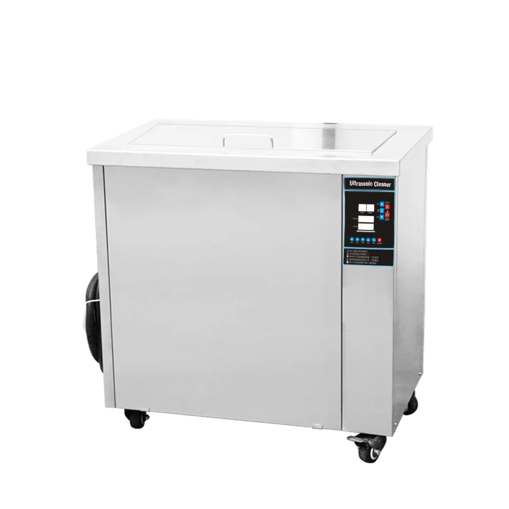
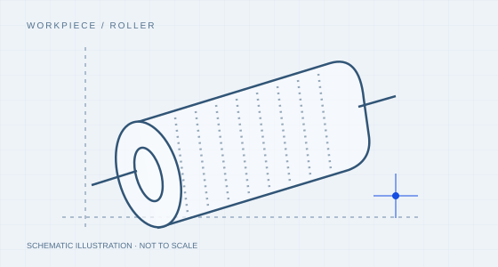

F / FH / F+
Single-tank cleaning systems
A dedicated cleaning bath for batch work, with external handling and any separate rinse or drying arranged around your process.
View equipmentEngraved cells and sensitive surfaces require more than a general immersion plan.
Illustrative study · not a customer case
| Planning item | Illustrative scope |
|---|---|
| Status | Illustrative planning study; no customer delivery or test result is claimed. |
| Workpiece | Anilox roller |
| Residue | Ink deposits |
| Equipment to evaluate | Single-tank cleaning systems |
Confirm roller length, journals and coating; define supports and inspect the same cell locations under consistent magnification.
Before choosing a machine, document material, dimensions, full basket weight, incoming residue, permitted surface changes and the next operation. Use a representative part rather than an unusually clean sample.

A dedicated cleaning bath for batch work, with external handling and any separate rinse or drying arranged around your process.
View equipmentThe linked family is a direction for assessment, not a record of a machine delivered for this study. Tank, fixture, filtration and handling choices remain subject to evaluation.
Engraved cells and sensitive surfaces require more than a general immersion plan.
Include fixture, spacing and orientation in the trial record.
Evaluate cleaning, required rinsing, draining and any drying together.
Confirm roller length, journals and coating; define supports and inspect the same cell locations under consistent magnification.
This study does not contain an actual trial log, before-and-after result or customer acceptance report. A real case would add recorded time, temperature, frequency, material condition, inspection evidence and unresolved limitations here.
Material, dimensions, residue, batch and the required result. Share what you know.